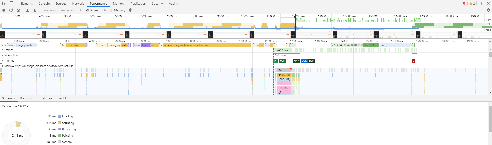
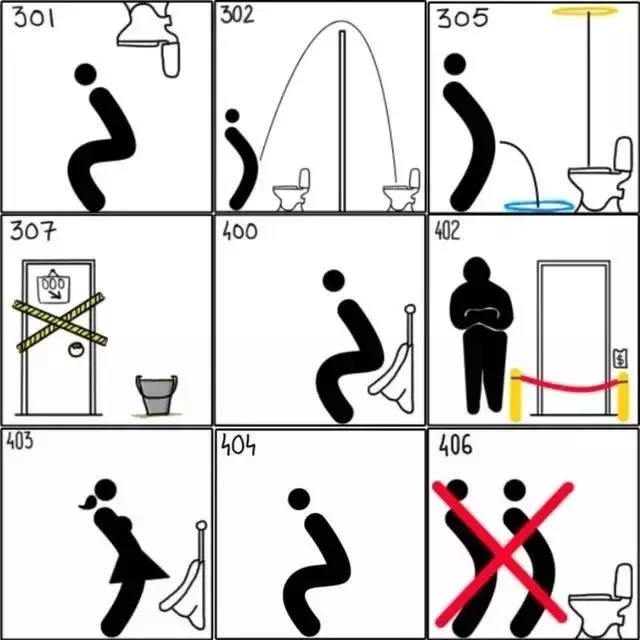

元素面板
使用元素面板可以自由的操作DOM和CSS来迭代布局和设计页面.测试时常通过手动增加字数，查看展示效果,验证内容过多时样式是否变形。
例如：
-
内容多的时候应该以'...'展示:
该文本容器宽度超出500像素后截取内容以 '...' 表示 -
做自动测试中定位元素：
通过操作开发者工具elements演示该功能。
控制台面板
在开发期间，可以使用控制台面板记录诊断信息，或者使用它作为 shell在页面上与JavaScript交互。
-
目前在测试中未使用到：
通过在操作开发者工具Console面板上执行javascript演示该功能。
源代码面板
开发时断点调试
-
目前在测试中未使用到：
暂不演示。
网络面板
使用网络面板了解请求和下载的资源文件并优化网页加载性能。另外，调试模式下，强烈建议勾选Disable cache选项，以避免缓存引起的一些诡异问题。

-
登录-用户信息的安全性：
通过在操作开发者工具Network面板上演示该功能。 -
录制页面快照：
通过在操作开发者工具Network面板上演示该功能。 该功能同Performance
Application
主要作用是检查 web 应用加载的所有资源，包括 Local Storage、Session Storage、IndexedDB、Cookies、Cache Storage 等。
Cookies验证登录超时：
前端基础知识
HTML、CSS、JavaScript
HTML:
HTML 指超文本标签语言，定义了网页的内容。
CSS:
层叠样式表 (Cascading Style Sheets)，描述了网页的布局。
JavaScript:
Web 的编程语言，网页的行为。
性能面板
使用性能面板了解请求和下载的资源文件并优化网页加载性能。
HTTP状态码
通过一篇形象好记的文章了解用以表示网页服务器HTTP响应状态的3位数字代码。
- 301—永久移动。被请求的资源已被永久移动位置；
- 302—请求的资源现在临时从不同的 URI 响应请求；
- 305—使用代理。被请求的资源必须通过指定的代理才能被访问；
- 307—临时跳转。被请求的资源在临时从不同的URL响应请求；
- 400—错误请求；
- 402—需要付款。该状态码是为了将来可能的需求而预留的，用于一些数字货币或者是微支付；
- 403—禁止访问。服务器已经理解请求，但是拒绝执行它；
- 404—找不到对象。请求失败，资源不存在；
- 406—不可接受的。请求的资源的内容特性无法满足请求头中的条件，因而无法生成响应实体；
- 408—请求超时；
- 409—冲突。由于和被请求的资源的当前状态之间存在冲突，请求无法完成；
- 410—遗失的。被请求的资源在服务器上已经不再可用，而且没有任何已知的转发地址；
- 413—响应实体太大。服务器拒绝处理当前请求，请求超过服务器所能处理和允许的最大值。
- 417—期望失败。在请求头 Expect 中指定的预期内容无法被服务器满足；
- 418—我是一个茶壶。超文本咖啡罐控制协议，但是并没有被实际的HTTP服务器实现；
- 420—方法失效。
- 422—不可处理的实体。请求格式正确，但是由于含有语义错误，无法响应；
- 500—服务器内部错误。服务器遇到了一个未曾预料的状况，导致了它无法完成对请求的处理；
AJAX
使用Ajax的最大优点，就是能在不更新整个页面的前提下维护数据。这使得Web应用程序更为迅捷地回应用户动作，并避免了在网络上发送那些没有改变的信息。 Ajax不需要任何浏览器插件，但需要用户允许JavaScript在浏览器上执行。 学习网站